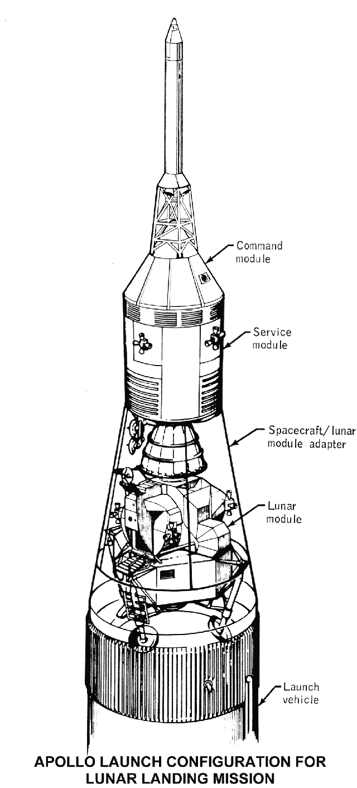

1969年7月16日 · 地面发射构型
三个舱，一起装在这里。
正在加载修订后的土星五号模型…
S-IVB（第三级）S-II（第二级）S-IC（第一级）
拖动旋转 · 滚轮缩放站位修订 · 完整图纸核验未通过

（指令舱）（服务舱）（适配器外壳）（登月舱）（运载火箭）剖开外壳是为了看内部，发射时外壳闭合。
沿着原图，从上往下看
逃逸系统
发射异常时，用来把指令舱带离火箭。
Spacecraft / lunar module adapter
（飞船／登月舱适配器）
（飞船／登月舱适配器）
包在外面的锥形结构，内部收纳登月舱。
Launch vehicle（运载火箭）
下面连接土星五号，把整套飞船送上太空。